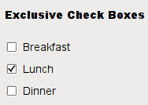
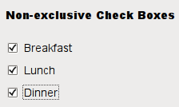

| Home · All Classes · Modules · QSS HELP · QSS 案例 · VER007 HOME |
该QCheckBox控件提供了一个文本标籤的复选框。More...
该QCheckBox控件提供了一个文本标籤的复选框。
一个QCheckBox是一个选项按钮，可以打开（选中）或关闭（未选中） 。复选框通常用于表示可以启用或禁用，而不会影响其他应用程序的功能，但不同类型的行为可以实施。例如，一个QButtonGroup可以用来检查组在逻辑上的按钮，允许独家复选框。但是，QButtonGroup不提供任何视觉表示。
下面进一步的图像显示了独家及非独家复选框之间的差异。
|  |  |
每当一个复选框被选中或清除它发出的信号stateChanged（ ） 。连接到这个信号，如果你想每次复选框的状态发生改变来触发一个动作。您可以使用isChecked（ ）来查询一个复选框是否被选中。
除了通常的选中和未选中状态， QCheckBox选择提供第三状态表示“没有变化” 。每当你需要给用户既不检查也不是取消选中的复选框的选择，这是很有用的。如果您需要这第三状态，与启用setTristate（） ，并使用checkState（ ）查询当前的切换状态。
一样QPushButton，一个复选框显示文本和可选的小图标。该图标设置setIcon（ ） 。该文本可以在构造函数或设置setText（ ） 。快捷键可以通过首选字符与前面的符号来指定。例如：
QCheckBox *checkbox = new QCheckBox("C&ase sensitive", this);
在这个例子中，快捷键是Alt+A。请参阅QShortcut有关详细信息的文档（显示的实际符号，使用“\u0026\u0026” ） 。
重要的继承功能：text（ ）setText（ ）text（ ）pixmap（ ）setPixmap（ ）accel（ ）setAccel（ ）isToggleButton（ ）setDown（ ）isDown（ ）isOn（ ）checkState（ ）autoRepeat（ ） ， isExclusiveToggle （ ） ，group（ ）setAutoRepeat（ ）toggle（ ）pressed（ ）released（ ）clicked（ ）toggled（ ）checkState（）和stateChanged（ ） 。
| A checkbox shown in the Macintosh widget style. | |
 |
A checkbox shown in the Windows XP widget style. |
| A checkbox shown in the Plastique widget style. |
该parent的说法，如果不是没有，原因self通过Qt的，而不是PyQt的拥有。
构造一个复选框与给定parent，但没有文字。
parent到传递QAbstractButton构造函数。
该parent的说法，如果不是没有，原因self通过Qt的，而不是PyQt的拥有。
构造一个复选框与给定parent和text。
parent到传递QAbstractButton构造函数。
返回复选框的选中状态。如果您不需要三态的支持，您还可以使用QAbstractButton.isChecked（ ）返回一个布尔值。
See also setCheckState（）和Qt.CheckState。
从重新实现QAbstractButton.checkStateSet（ ） 。
从重新实现QObject.event（ ） 。
从重新实现QAbstractButton.hitButton（ ） 。
初始化option与其它的值QCheckBox。这种方法对于那些需要子类有用QStyleOptionButton，但不希望在所有的信息填写自己。
See also QStyleOption.initFrom（ ） 。
从重新实现QWidget.minimumSizeHint（ ） 。
此功能被引入Qt的4.8 。
从重新实现QWidget.mouseMoveEvent（ ） 。
从重新实现QAbstractButton.nextCheckState（ ） 。
从重新实现QWidget.paintEvent（ ） 。
设置复选框的选中状态，以state。如果您不需要三态的支持，您还可以使用QAbstractButton.setChecked（ ） ，它接受一个布尔值。
See also checkState（）和Qt.CheckState。
从重新实现QWidget.sizeHint（ ） 。
这是该信号的默认超载。
这个信号被发射时该复选框的状态发生变化，即每当用户选中或取消选中它。
state包含复选框的新Qt.CheckState。
| PyQt 4.10.3 for X11 | Copyright © Riverbank Computing Ltd and Nokia 2012 | Qt 4.8.5 |